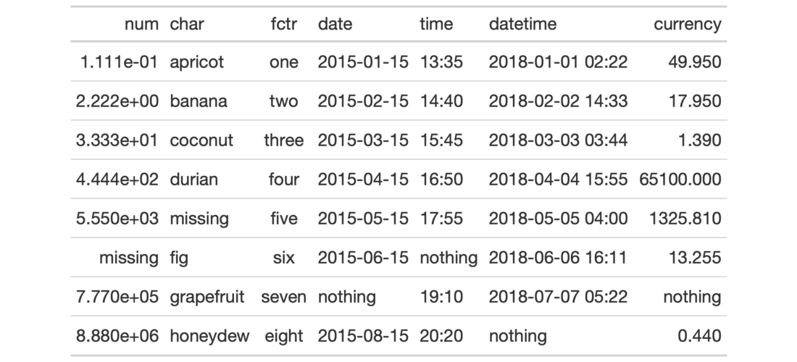

| fmt_missing {gt} | R Documentation |
Wherever there is missing data (i.e., NA values) a customizable mark may
present better than the standard NA text that would otherwise appear. The
fmt_missing() function allows for this replacement through its
missing_text argument (where an em dash serves as the default).
fmt_missing(data, columns, rows = everything(), missing_text = "---")
data |
A table object that is created using the |
columns |
The columns to format. Can either be a series of column names
provided in |
rows |
Optional rows to format. Providing either |
missing_text |
The text to be used in place of |
Targeting of values is done through columns and additionally by rows (if
nothing is provided for rows then entire columns are selected). A number of
helper functions exist to make targeting more effective. Conditional
formatting is possible by providing a conditional expression to the rows
argument. See the Arguments section for more information on this.
An object of class gt_tbl.

3-10
Other Format Data:
data_color(),
fmt_currency(),
fmt_datetime(),
fmt_date(),
fmt_markdown(),
fmt_number(),
fmt_passthrough(),
fmt_percent(),
fmt_scientific(),
fmt_time(),
fmt(),
text_transform()
# Use `exibble` to create a gt table;
# NA values in different columns will
# be given replacement text
tab_1 <-
exibble %>%
dplyr::select(-row, -group) %>%
gt() %>%
fmt_missing(
columns = 1:2,
missing_text = "missing"
) %>%
fmt_missing(
columns = 4:7,
missing_text = "nothing"
)